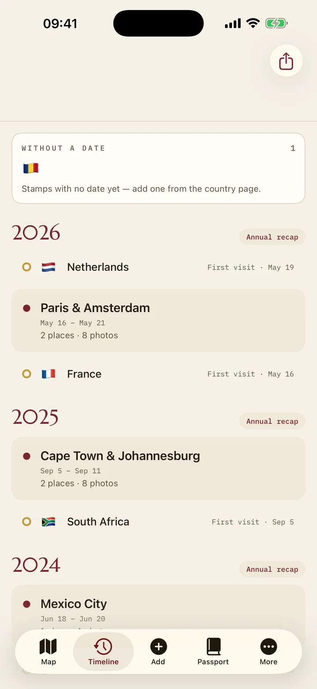
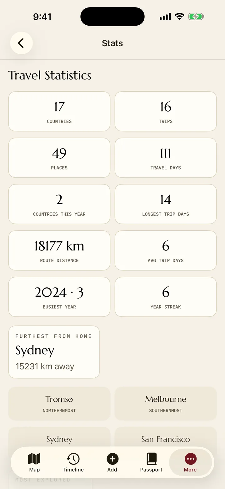

Il tuo diario, in tre modi
Costruisci i viaggi automaticamente dalle tue foto, aggiungili a mano in pochi secondi o importa tracce GPX e KML da altri strumenti. Comunque arrivino, il tuo passaporto resta coerente.
Viaggi con luoghi, date, note e foto. Una cronologia per anno. Statistiche che rispondono alle domande che ti fai davvero. Tutto offline, in un passaporto che sembra vero.
Gratis · senza abbonamentoFunziona offlineSenza account · senza tracciamento


Costruisci i viaggi automaticamente dalle tue foto, aggiungili a mano in pochi secondi o importa tracce GPX e KML da altri strumenti. Comunque arrivino, il tuo passaporto resta coerente.
Paesi, viaggi, luoghi unici, giorni di viaggio, chilometri, voli contro tratte via terra — più il luogo più lontano da casa in cui tu sia mai stato, i tuoi estremi cardinali e la serie più lunga di anni di viaggio consecutivi. Un riepilogo annuale rigioca le rotte dell'anno sulla mappa e si esporta come card o libro di viaggio PDF.
Tutto si esporta in formati aperti — CSV, GPX, KML, GeoJSON, più un backup completo in JSON leggibile. I tuoi dati non restano mai bloccati, perché non sono mai stati nostri.
Scrivi una pagina per ogni giorno di un viaggio e annota con chi eri — i nomi filtrano la tua cronologia e le pagine finiscono nel tuo libro di viaggio PDF. Intanto il passaporto tiene il conto da solo: circa 29 sigilli si imprimono dal tuo archivio, per traguardi di paesi, ogni continente, il circolo polare, l'equatore e il punto esattamente opposto a casa tua.
I viaggi si impilano per anno, dal più recente, ognuno con i suoi paesi, le sue date e la sua foto di copertina. Filtra per paese per rivedere tutte le volte che ci sei tornato, o per la persona con cui hai viaggiato per estrarre gli anni in cui non sei mai stato solo.
Apri un viaggio ed è tutto lì: i luoghi in ordine, il percorso sulla mappa, le foto collegate, le pagine di diario che hai scritto e le note che altrimenti avresti dimenticato. Niente sparso fra tre app.
Un archivio di viaggi vale la pena solo se sopravvive a un telefono nuovo, a un cambio di piattaforma e un giorno all'app stessa. Il backup di Voymark è JSON leggibile, le esportazioni usano i formati che usa tutto il mondo, e una di esse è testo semplice apribile in qualsiasi editor.
Lo stesso file passa da iPhone ad Android e viceversa, perché entrambe le app leggono e scrivono un unico formato. Non c'è nessun server in mezzo, quindi non c'è niente che possa chiudere.
Non c'è nulla a cui iscriversi e nulla in cui accedere. I tuoi viaggi vivono nello spazio dell'app sul tuo telefono: nessun server li conserva, nulla che li riguardi ci viene mai inviato, nessun abbonamento si mette fra te e la tua storia.
No. Punta Voymark alla tua libreria foto e ti propone viaggi già pronti — date, luoghi e paesi — dalle coordinate che le foto portano già. Rivedi ogni proposta prima che venga salvato qualcosa, e puoi comunque aggiungere un viaggio a mano in una quindicina di secondi.
Esporta un file di backup, spostalo come preferisci — AirDrop, un cavo, una cartella cloud di cui ti fidi — e ripristinalo sul telefono nuovo. Funziona da iPhone ad Android e viceversa, perché entrambe le app usano lo stesso formato.
Ogni viaggio ha una pagina al giorno per ciò che è successo e registra con chi eri. Entrambe finiscono stampate nel libro di viaggio PDF accanto a mappe e foto, così il diario non resta prigioniero dell'app.
Inglese, francese, spagnolo, italiano, tedesco e rumeno, tradotti per intero e non a metà. Scegli la lingua dentro l'app, indipendentemente dall'impostazione del telefono.